О ШРИФТЕ
Menoe Grotesque Pro — это моноширинный шрифт без засечек, разработанный на основе пишущей машинки Continental
Разработан и опубликован Адамом Катием в 2015 году
Menoe Grotesque — это:
поддерживает в общей
сложности 86 языков,
в том числе кириллицу
и латиницу
является моноширинным,
из-за чего идеально
подходит для разбиения
текста на столбцы
и программирования
не содержит засечек,
является гротеском
сочетание “ое” имеет
альтернативное начертание
наклон буквы “а”
составляет 9 градусов
 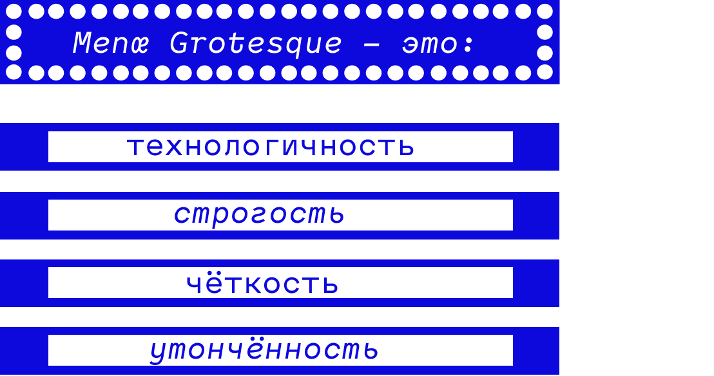
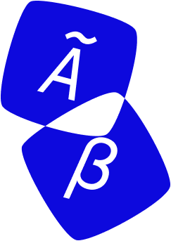
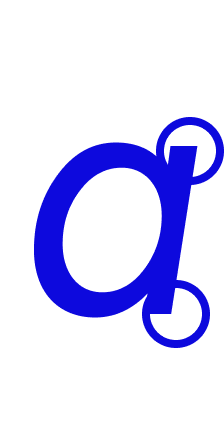
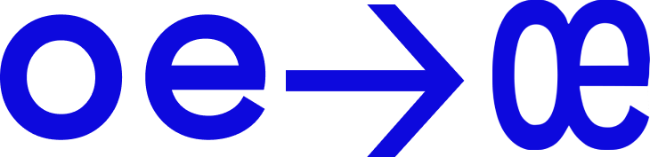
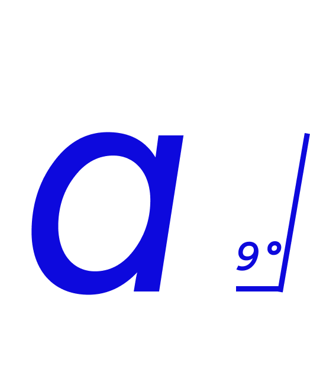
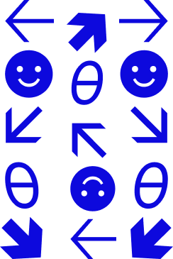
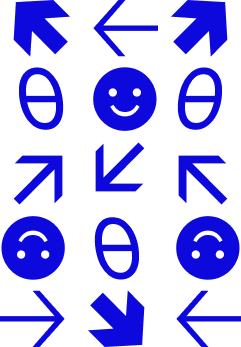
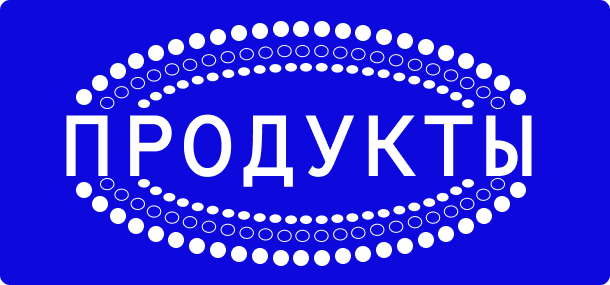
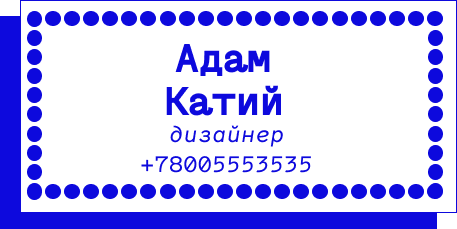
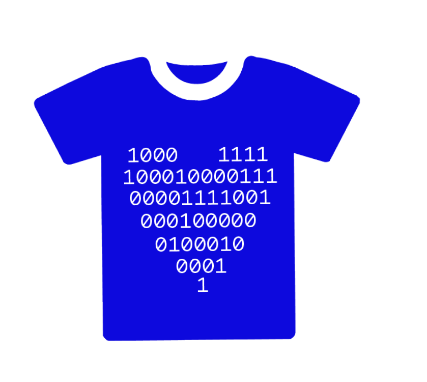
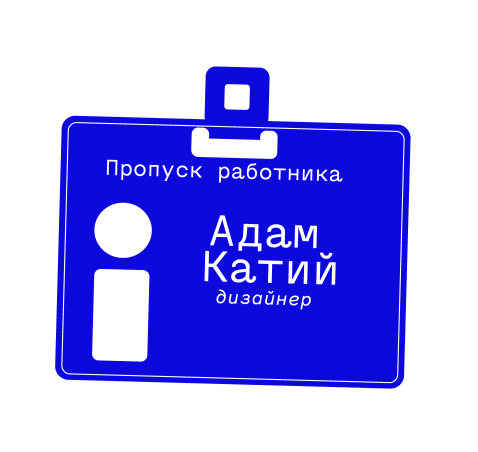
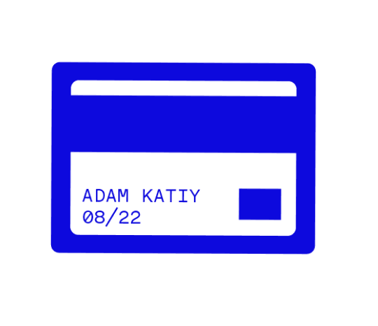
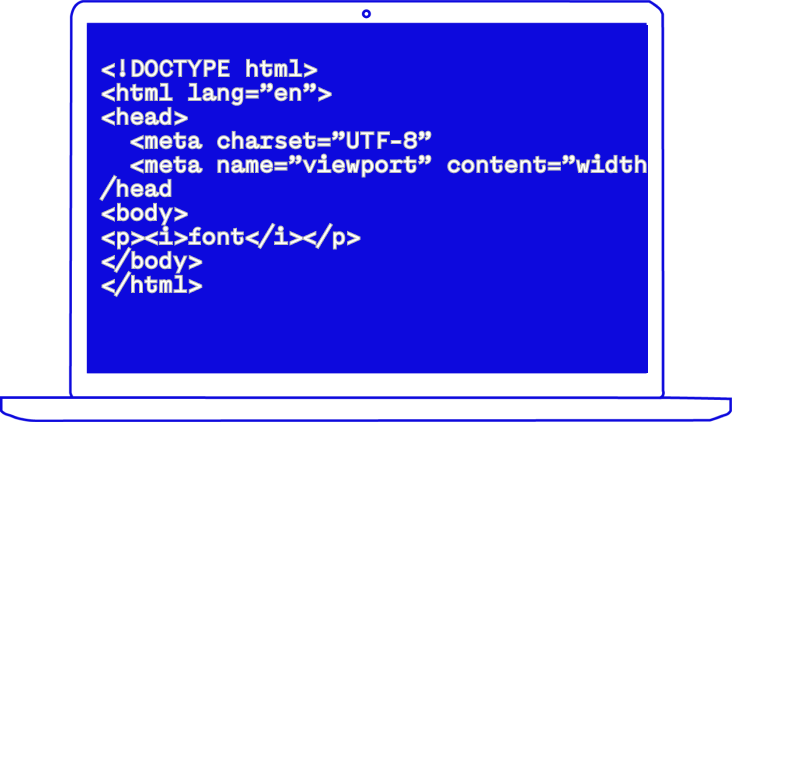
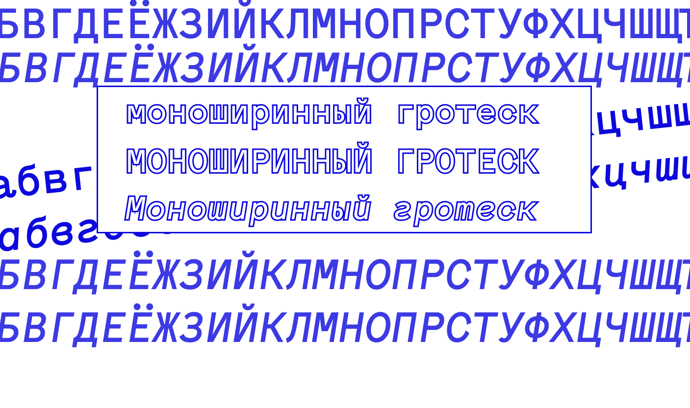
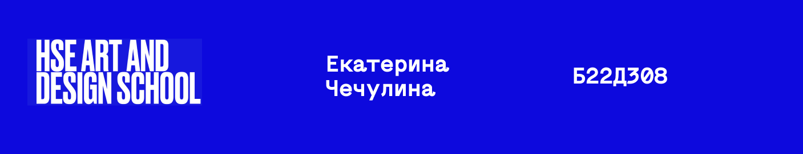
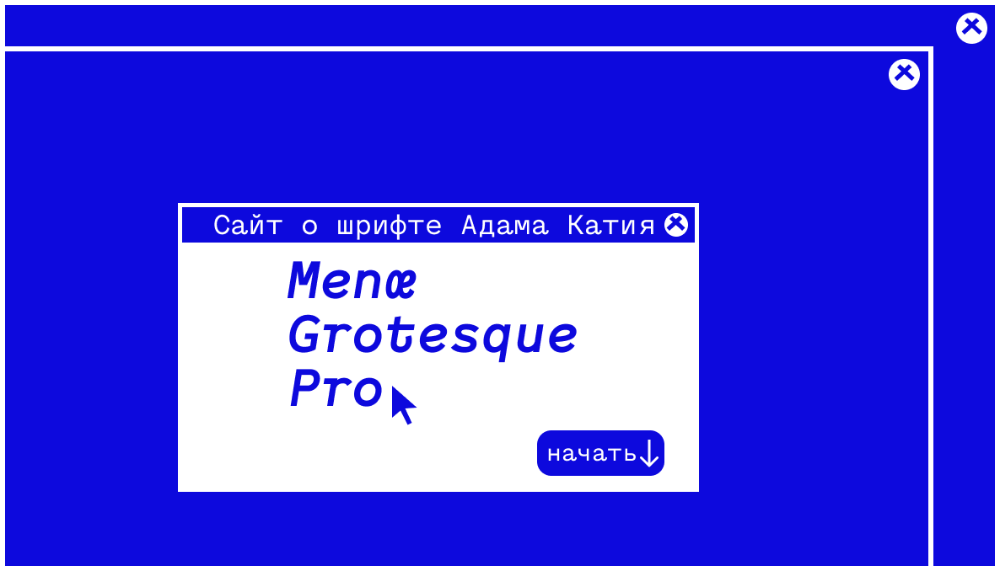
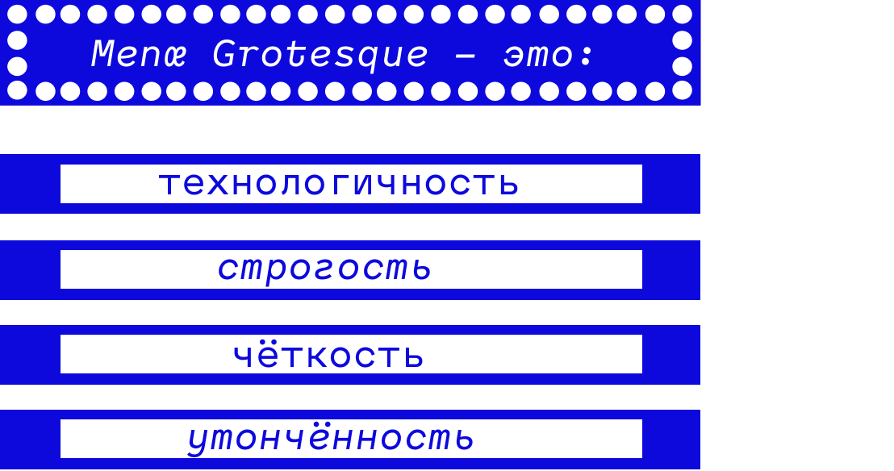
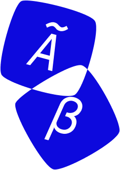
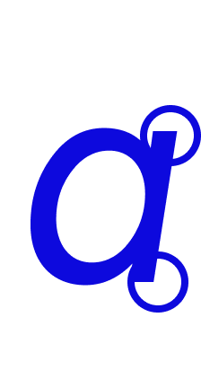
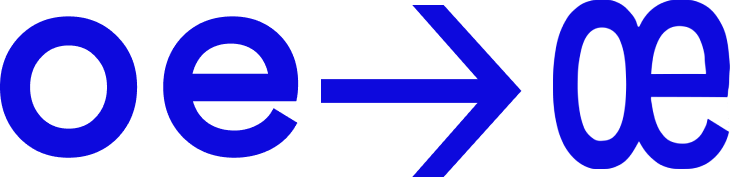
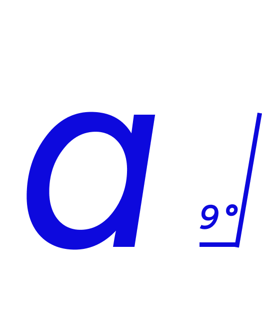
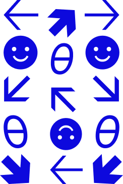
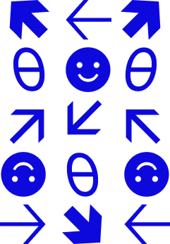
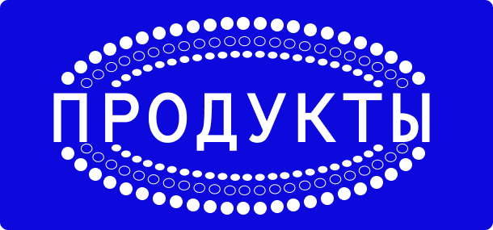
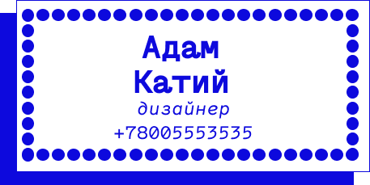
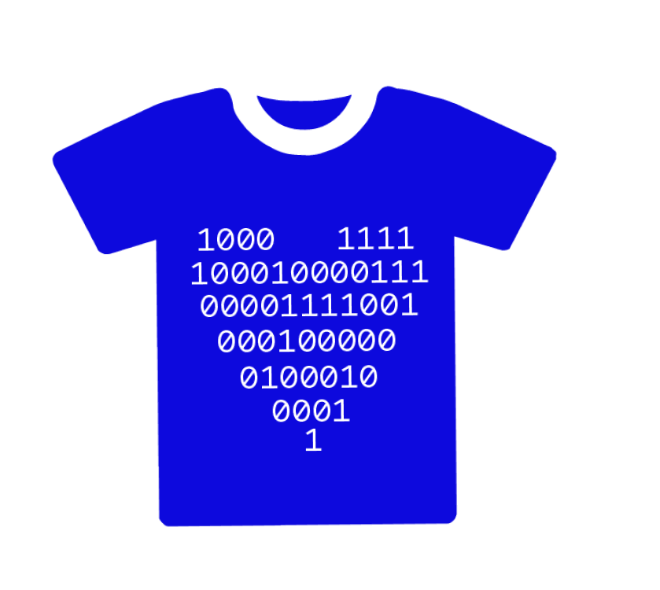
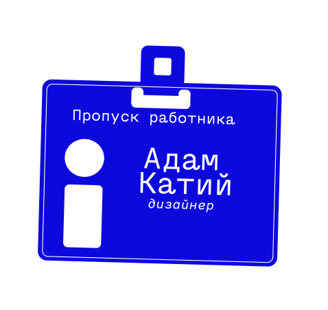
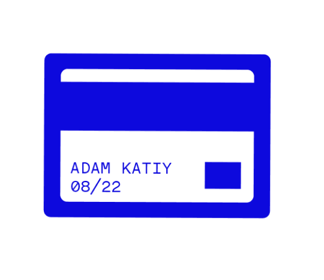
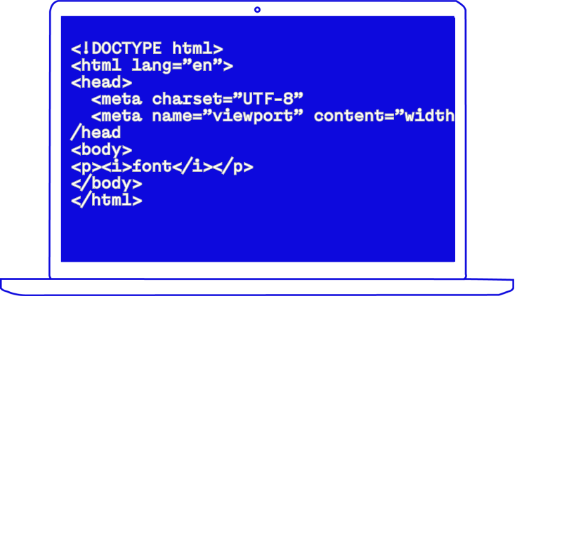
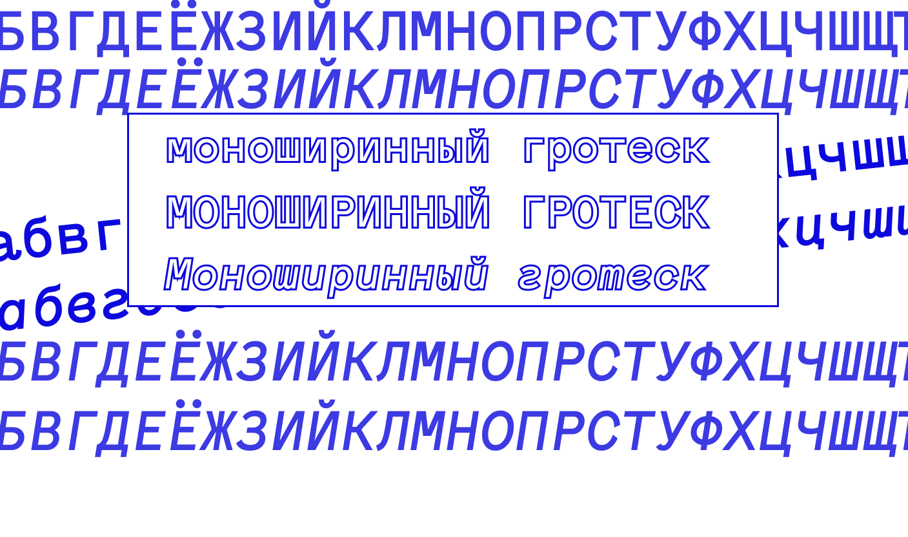
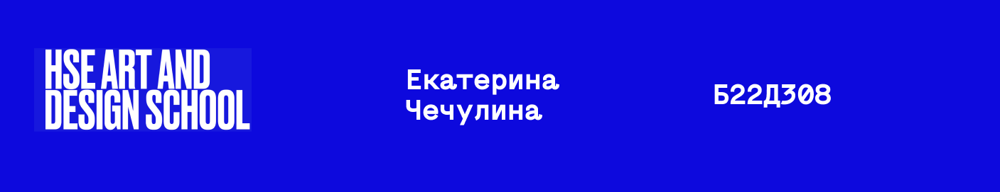
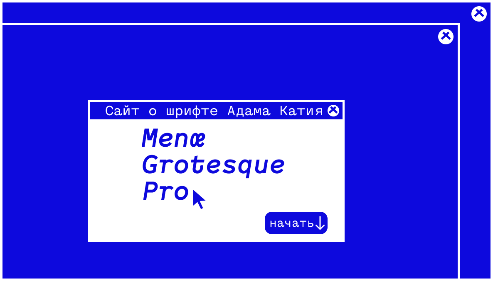